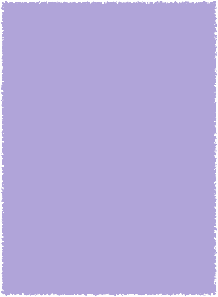
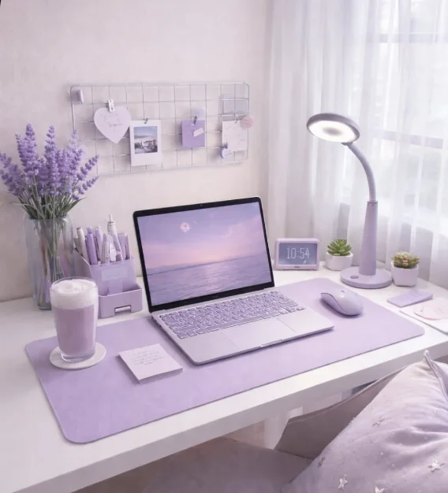
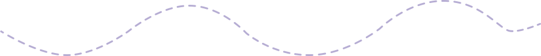

ファッション
FASHION
- ・ファッションやコーディネートを楽しみます。
- ・色や素材の組み合わせを見ることが好きです。


母国の大学で約4年間、IT Engineeringを学ぶ中で、
WebプログラミングやWebデザインに興味を持つようになりました。
その後、母国の社会情勢の変化により大学での学びを続けることが難しくなりました。しかし、Webに関わる仕事をしたいという思いは変わらず、もう一度学び直し、自分の夢に挑戦することを決めました。
2024年に日本へ渡り、日本語学校で約2年間、日本語を学びました。
そして2026年4月、神戸電子専門学校に入学しました。
現在は、グラフィックデザイン、Webデザイン、動画編集など、幅広い分野を学んでいます。
これまでの経験を活かしながら、Webデザインとコーディングの両方を身につけ、将来はWebデザイナー、フロントエンドエンジニアとして、デザインと技術の両方から価値を生み出せる人を目指しています。

2020–2024
IT Engineering
2024
日本でスタート
2024–2026
日本語を学ぶ
2026–2028
神戸電子専門学校
将来
Webデザイナー
日常の中でリフレッシュできることや、
自分の感性を豊かにしてくれることが好きです。
FASHION
TRAVEL & PHOTO
ANIME